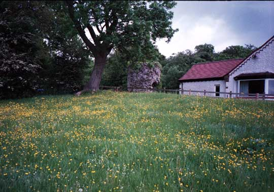
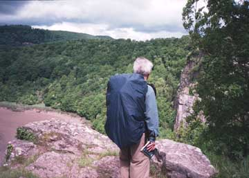
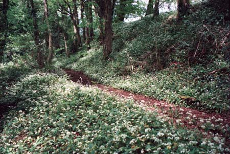
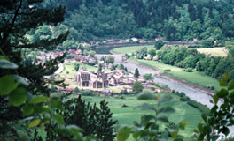
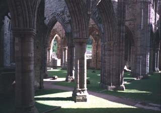

We enjoyed chatting with our host at breakfast, learning about how strong the Welsh language movement is. We stopped by Tesco for lunch materials and by the Post Office for stamps and set off back across the Rennie Bridge. The River Wye separates England and Wales for many miles, and our walk started off on the English side. As we left town, we were in a field of buttercups and daisies, as we would be many more times. Here, though, there was a medieval tower, of unknown origin, sitting in back of the house. We soon were climbing high above the river on the top of cliffs, with striking views down to the Wye, far below. There's a good view from"Wintour's Leap", where a Royalist is supposed to have jumped with his horse and survived while fleeing Cromwell's Parliamentarians.
Much of the walk was through woods, which were damp and
permeated with the smell (which we enjoyed) of wild garlic.
The woods were carpeted with the white flowers, and we were
overwhelmed by the beauty. We were again walking beside or
on top of Offa's Dyke. We came to our
first view, down through a gap in the trees, of Tintern
Abbey. We were again overwhelmed! What a sight it
was, way below us, beside the winding river! We stopped and
ate our lunch at the "Devil's Pulpit", a big rock
column from which the Devil was supposed to have preached to the
monks in the abbey far below. After lunch, we continued to
walk in the woods, on the dyke, surrounded by wild garlic in
bloom, with occasional glimpses of
the abbey. At a footpath sign marked for Tintern, we turned
down the hillside. When we got to the abbey, we went in and
spent a happy, leisurely couple of hours. The sun was
shining and everything was wonderful!
Our B&B was the "Wye Barn", a 450-year old house
beside the Wye, quite near the abbey. We
had dinner at the pub, "The Moon and Sixpence",
which had a curious spring-fed pool in the dining room. The road
we followed to the pub had the Wye on the right and a hillside on
the left. On the way back to our B&B, we could hear the
springs rushing down behind the retaining wall at the base of the
hill. We found holes through which we could reach and touch the
springs!
| Previous Day | Next Day | Home Page |